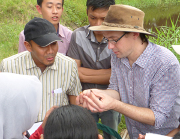
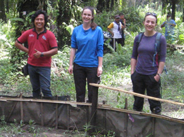
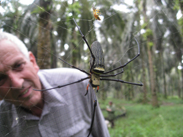
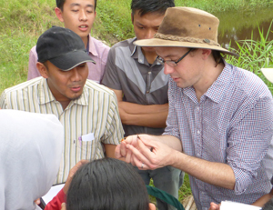
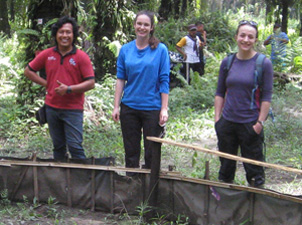
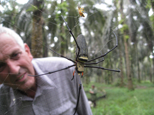

Collaborators
Research is not a lone venture, but a highly collaborative effort bringing minds together from across multiple countries.

University of Cambridge - Insect Ecology Group
Our research group studies the ecology of insects, the impacts of human-induced habitat change on insect communities, and management solutions to maintain insect populations and associated ecosystem functions in natural and human-modified systems.
- We collaborate on several large-scale projects in Southeast Asia focused on biodiversity, ecosystem services (e.g., pest control), and sustainable agriculture. Partners include Sinar Mas Agro Resources and Technology, Wild Asia, Universiti Putra Malaysia, and IPB University.
🔗 Learn more about the Insect Ecology Group at Cambridge »
 






IPB University - Bogor, Indonesia
IPB University focuses on biodiversity, forest connectivity, and ecological restoration.
- Research includes the SAFE project and broader palm oil landscapes.
Sinar Mas Agro Resources & Technology (SMART)
Sinar Mas supports sustainable palm oil management practices and research, in partnership with academic institutions and local stakeholders.
🔗 Learn more about the research at Sinar Mas Agribusiness and Food »

University of Nottingham
Top university in the UK, leading experimental restoration ecology in riparian zones. Lead by Sarah Luke.
- Collaborators work on reforestation and oil palm landscape restoration in Sumatra and Borneo.

Other Collaborators
Additional collaborators and networks may be added here as our partnerships expand.